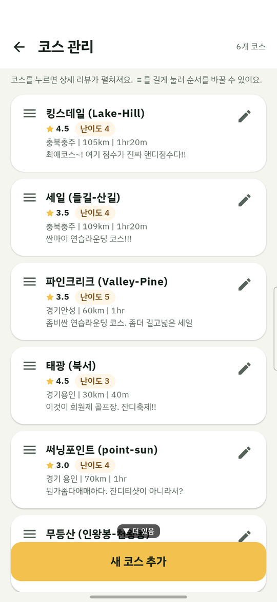
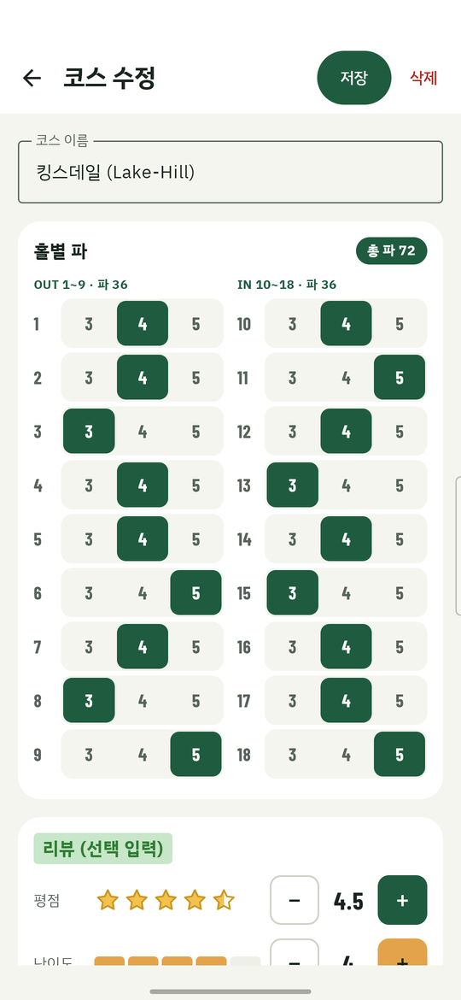
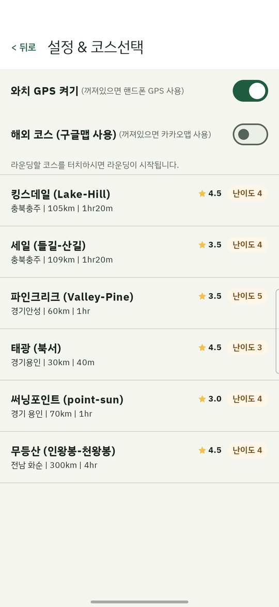
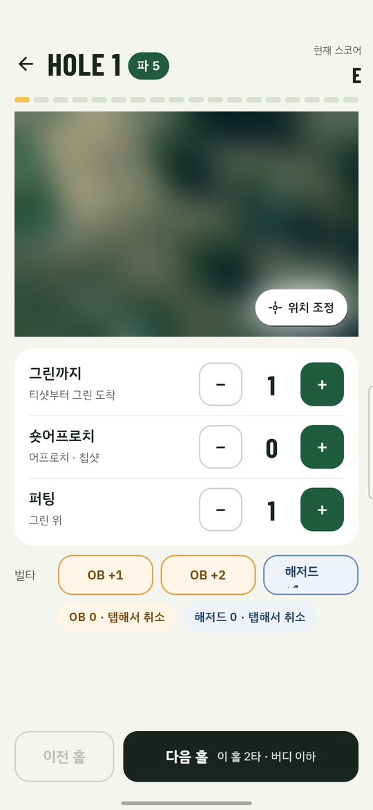
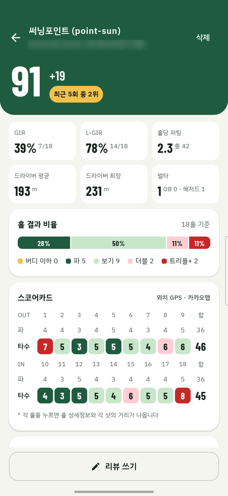
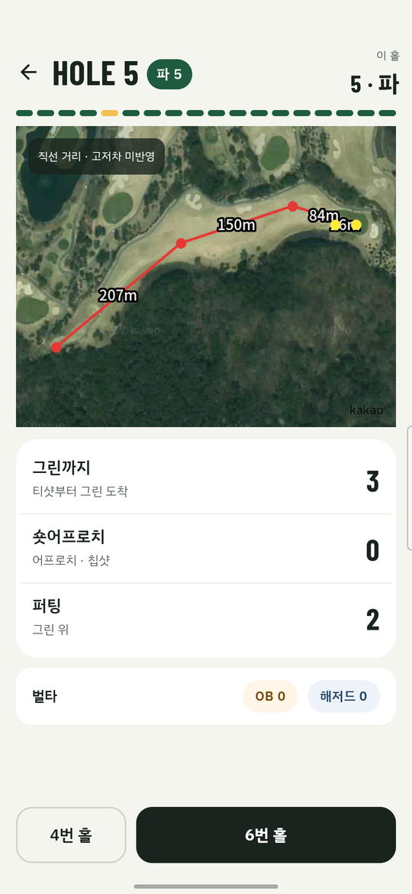
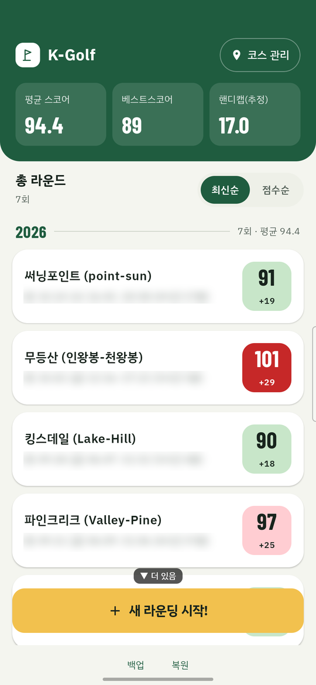
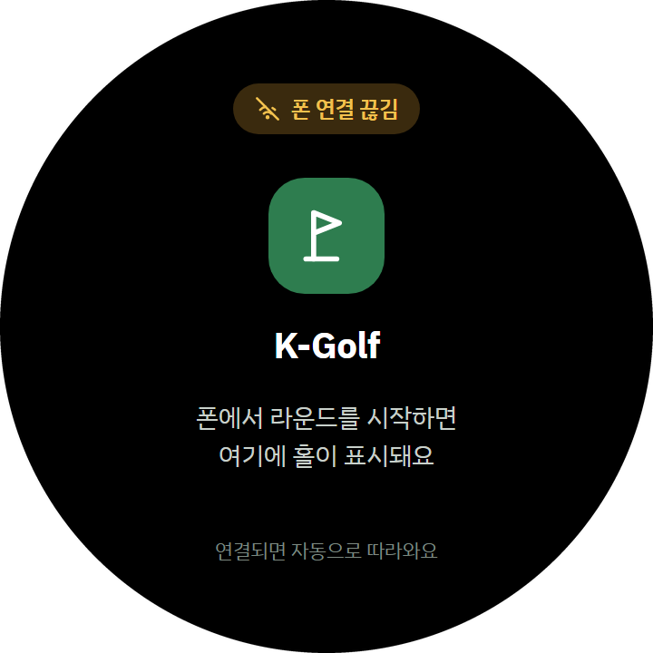
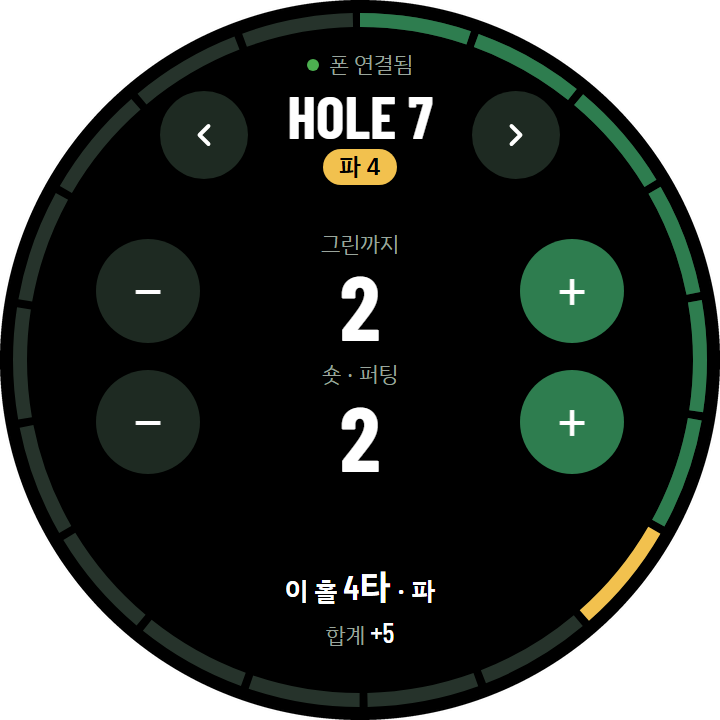
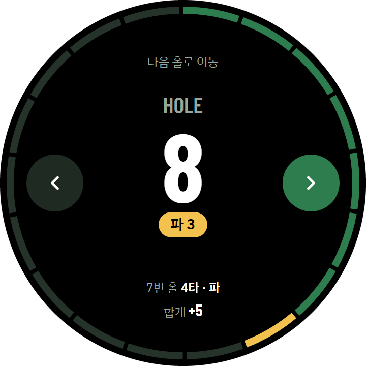

처음 켜는 분을 위한 5분 가이드 — 코스 등록부터 라운드 결과 확인까지
이전 버전 위에 그대로 덮어 설치하면 코스와 라운드 기록이 그대로 유지돼요. 예전 버전(UX 1.0)에 기록이 있다면 설치 전에 아래 안내대로 백업부터 해두세요.
예전 K-Golf(v0.7.x 등 UX 1.0 화면)에 기록을 쌓아 두셨다면, 새 버전으로 바꾸기 전에 백업 파일을 하나 만들어 두세요. 코스(홀별 파·평점·리뷰·유튜브 링크 포함), 라운드, 샷 위치, 벌타가 파일 하나에 통째로 들어가요.
Download 폴더, 구글 드라이브)를 고르고 저장하면 "백업 완료"가 떠요. 파일 이름은 golf_recorder_backup_날짜_시간.db 모양이에요.맨 처음엔 등록된 코스가 없어요. 홈 화면 오른쪽 위 "코스 관리"를 눌러 맨 아래 "새 코스 추가"로 들어가면 코스를 만들 수 있어요.
한 번 등록해두면 다음부터는 라운드 시작할 때 목록에서 고르기만 하면 돼요.


홈 화면 아래쪽 노란 "새 라운딩 시작!" 버튼을 누르면 "설정 & 코스선택" 화면이 열려요. 맨 위에 스위치 두 개가 있고, 대부분은 그냥 끈 채로 시작하면 돼요. 아래 상황에서만 켜주세요.
코스 목록에는 각 코스의 평점(별)과 난이도, 지역 | 거리 | 소요시간이 같이 보여서 고르기 쉬워요. 코스를 누르면 바로 1홀부터 라운드가 시작돼요. (알림 권한을 물어보면 허용해주세요 — 라운드 중 워치 연동과 워치 배터리 경고에 쓰여요.)

홀 기록 화면이에요. 위쪽에 HOLE 번호와 파, 그 아래 18칸 진행바(지나온 홀은 초록, 지금 홀은 노랑)가 있고, 오른쪽 위에는 지금까지의 현재 스코어(파 대비)가 떠요.
위성 지도 아래 카드에서 그린까지 · 숏어프로치 · 퍼팅을 −/+로 그때그때 기록해요. 버튼을 누른 순간의 GPS 위치가 지도 위에 점으로 남아요.
벌타는 한 줄 버튼으로 기록해요 — OB +1, OB +2(특설티), 해저드 +1. 잘못 눌렀으면 아래 "OB 0 · 탭해서 취소" 칩을 눌러 한 개씩 되돌려요.
지도가 내 위치와 다르게 보이면 지도 오른쪽 아래 "위치 조정"을 눌러 다시 맞출 수 있어요. 한 홀이 끝나면 아래 "다음 홀" 버튼으로 넘어가요 — 버튼에 "이 홀 2타 · 버디 이하"처럼 방금 홀의 타수와 결과가 같이 보여서 한 번 더 확인할 수 있어요. 앞 홀로 돌아갈 때는 "이전 홀"을 눌러요.
※ 위 화면의 지도는 지금 있는 곳의 동네가 그대로 나와서 흐리게 처리했어요. 실제로는 코스 위성지도가 보여요.

홀 기록 화면 왼쪽 위 ← 뒤로를 누르면 언제든 지금까지의 결과 화면으로 이동해요. 라운드 도중에도, 다 끝낸 뒤에도 같은 곳에서 볼 수 있어요 — 홀을 다 안 돌아도 기록은 사라지지 않아요.
화면 아래 "리뷰 쓰기"를 누르면 라운딩 가격·동반자·후기를 남길 수 있어요 (모두 선택). 오른쪽 위 "삭제"는 이 라운드를 지울 때 써요.
스코어카드의 타수 칸을 누르면 그 홀의 상세 화면이 열려요. 그 홀에서 친 샷들이 지도 위에 선으로 이어지고, 샷과 샷 사이 실제 거리(m)가 같이 표시돼요. 아래 카드에는 그 홀의 그린까지·숏어프로치·퍼팅 타수와 벌타가 있고, 맨 아래 버튼으로 앞뒤 홀로 이동해요.


화면 맨 아래 백업 / 복원으로 전체 기록을 파일 하나로 저장해두는 것도 추천해요. (예전 버전에서 기록을 옮겨 오는 방법은 위 "0-1. 이전 버전(UX 1.0)을 쓰고 있다면"을 참고하세요.)
※ 위 화면은 실제 기록 예시라 날짜·시간 줄은 알아보기 어렵게 흐리게 처리했어요.

폰만으로도 앱을 완전히 쓸 수 있어요. 워치 연동은 라운드 중 폰을 꺼내지 않고 손목에서 타수를 올리고 싶을 때만 필요한 선택 기능이에요.
준비물
설치 방법 — 워치는 폰처럼 apk를 눌러서 바로 설치할 수 없어서, 폰에 설치 도우미 앱을 하나 더 깔아야 해요.
adb pair/adb connect에 입력해 직접 설치할 수도 있어요.
사용법 — 워치 화면은 동그란 디자인이고, 상황에 따라 세 가지 화면이 나와요.



※ 워치 화면은 디자인 도안 이미지예요. 실제 기기에서는 글자 크기와 간격이 조금 다를 수 있어요.